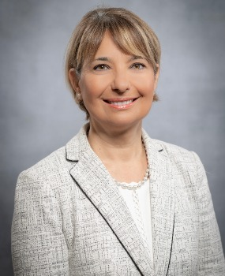

Since opening its doors nearly 27 years ago, Florida Gulf Coast University (FGCU) has made an incredible impact in Southwest Florida and beyond. FGCU is innovative, nimble, and dedicated to enriching the lives of students through transformational learning, teaching, scholarship, and service experiences. As a regional comprehensive university, FGCU offers undergraduate and graduate degree programs of strategic importance to Southwest Florida and beyond. Outstanding faculty and staff - supported by a strong community of advisers - prepare students for gainful employment and successful lives as responsible, productive, and engaged citizens. The university is committed to providing a supportive environment where academic excellence, student success, and professional growth are prioritized.
